SENTIQUE
Connect your Gmail sender
Steps 3 and 7 show testing-stage warnings. They may disappear after verification. Continue only when you recognize Sentique, expected the setup invitation and trust the requested access.
Use the exact sender account shown in your invitation. Open your own private setup link from the email; these screenshots are examples.
1. Start Gmail setup
Click Authorize Gmail, then Continue to Gmail authorization.
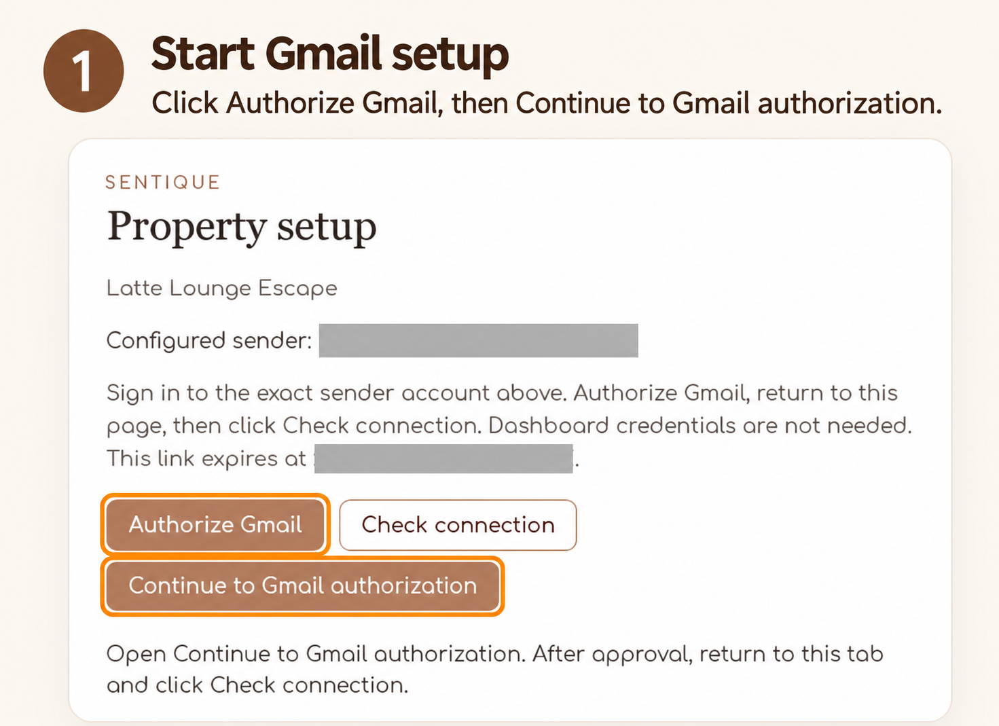
2. Review permissions
Click Review permissions.
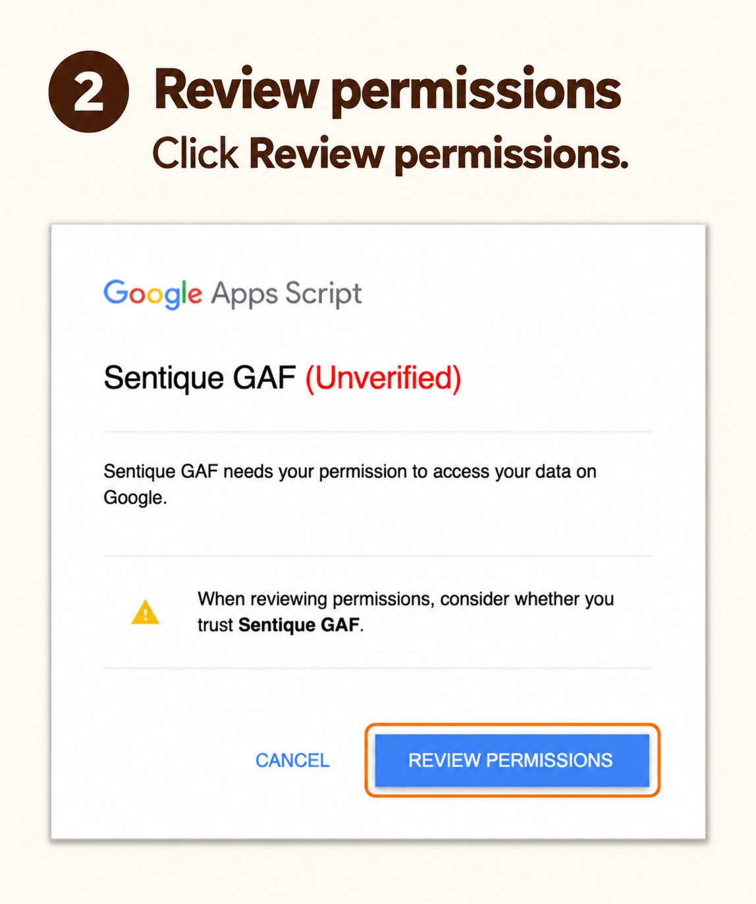
3. Testing-stage warning
Continue only if Sentique invited you and you trust this app.
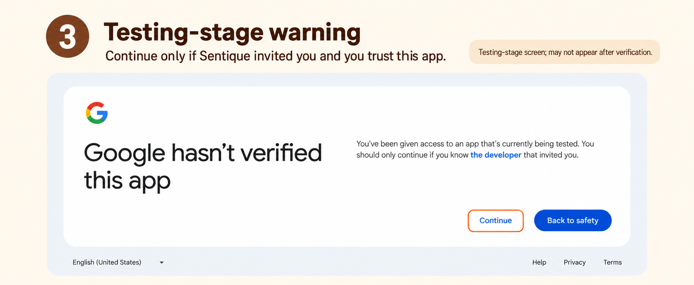
4. Confirm your sender account
Check the selected account, then click Continue.
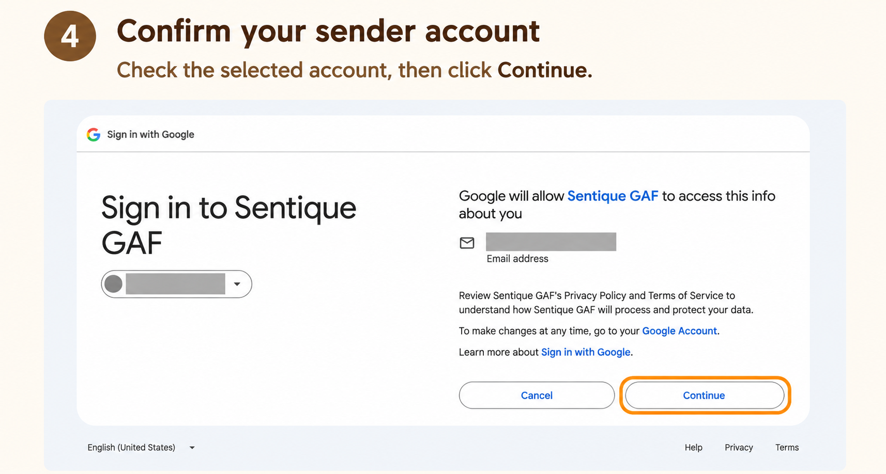
5. Allow the helper connection
Review Connect to an external service, then click Continue.
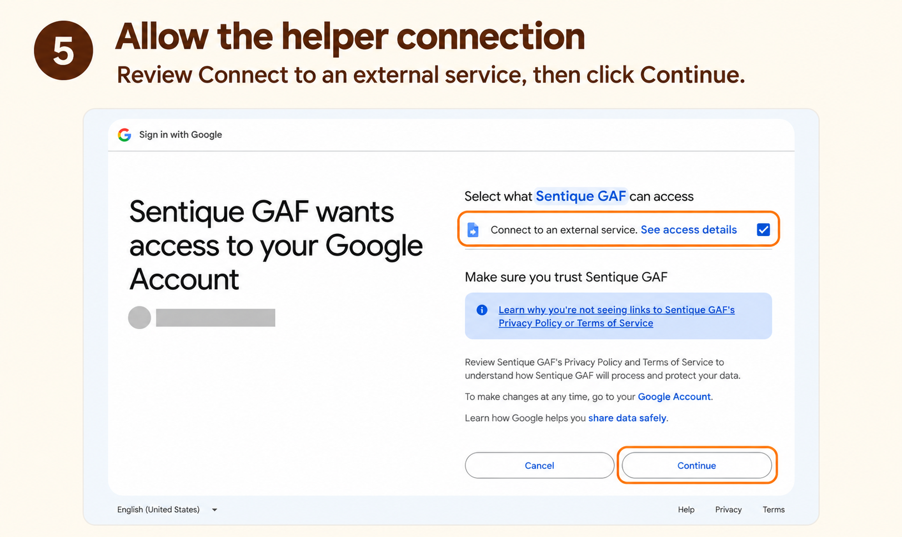
6. Authorize the Gmail sender
Confirm the sender account, then click Authorize Gmail Account.
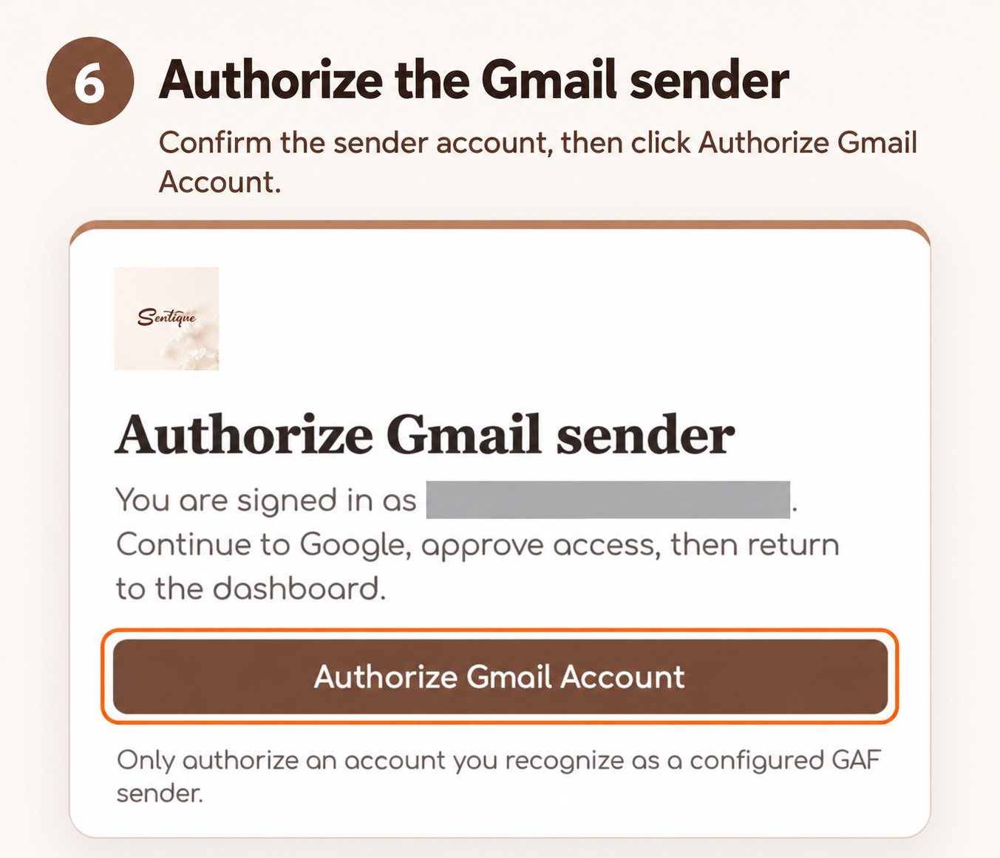
7. Testing-stage warning
Continue only if Sentique invited you and you trust this app.
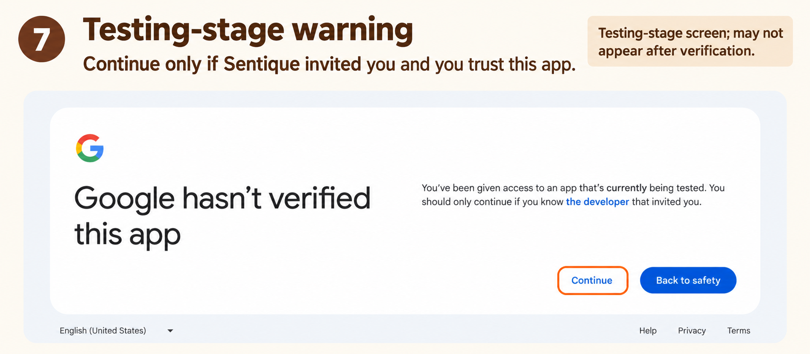
8. Confirm the account again
Use the same sender account, then click Continue.
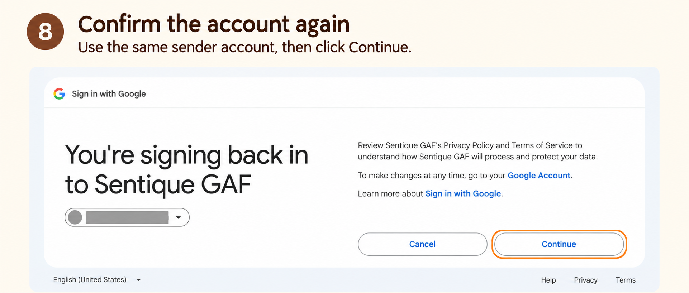
9. Review Gmail sending access
Review Send email on your behalf, then click Continue.
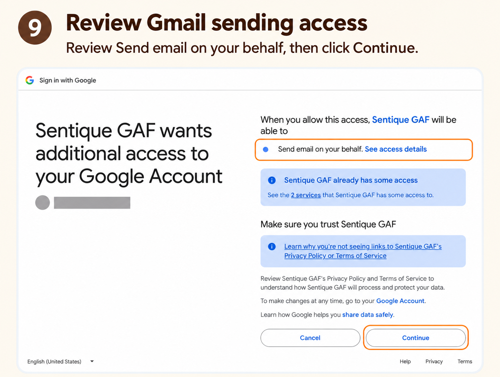
10. Return to Property setup
Go back to the original Property setup tab.
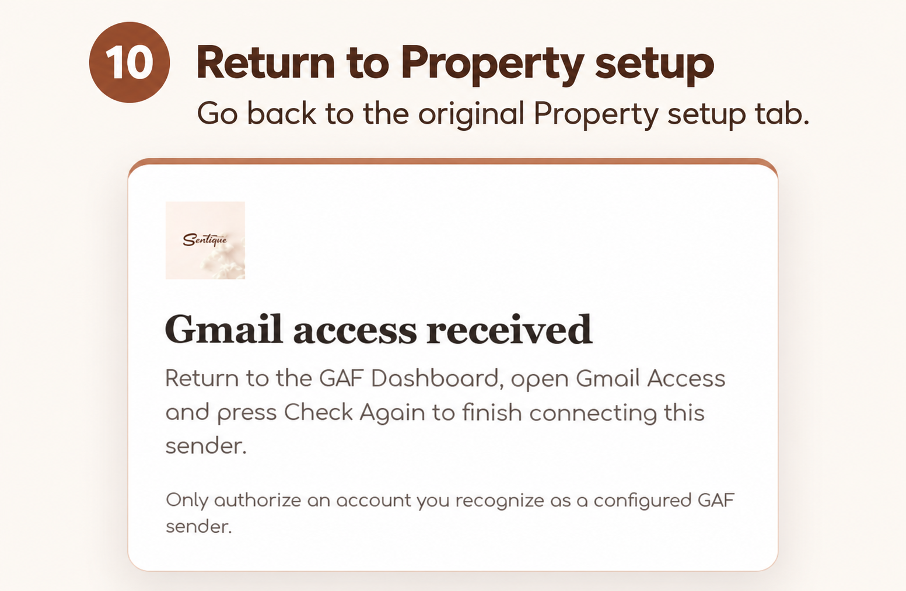
11. Check the connection
Click Check connection. Finish when Gmail connected appears.
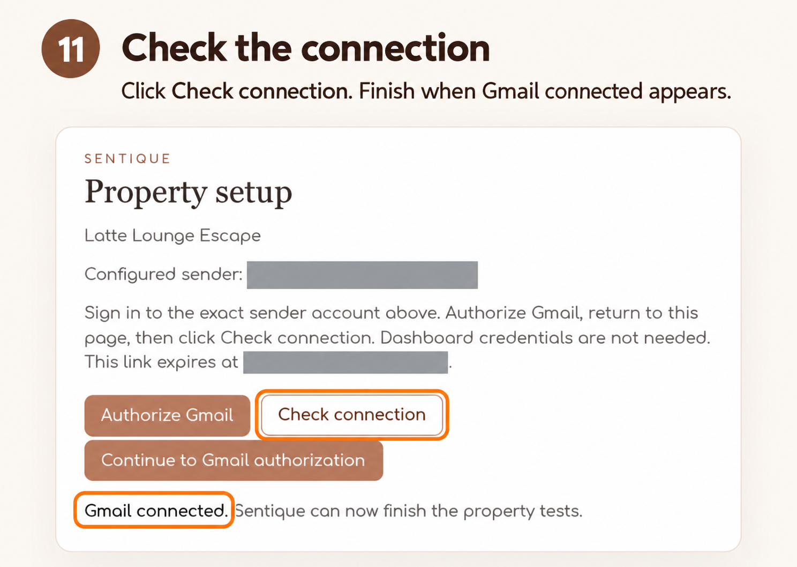